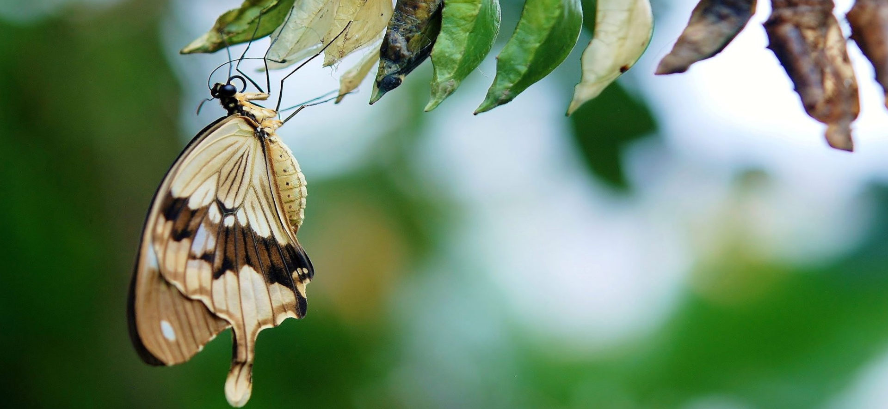
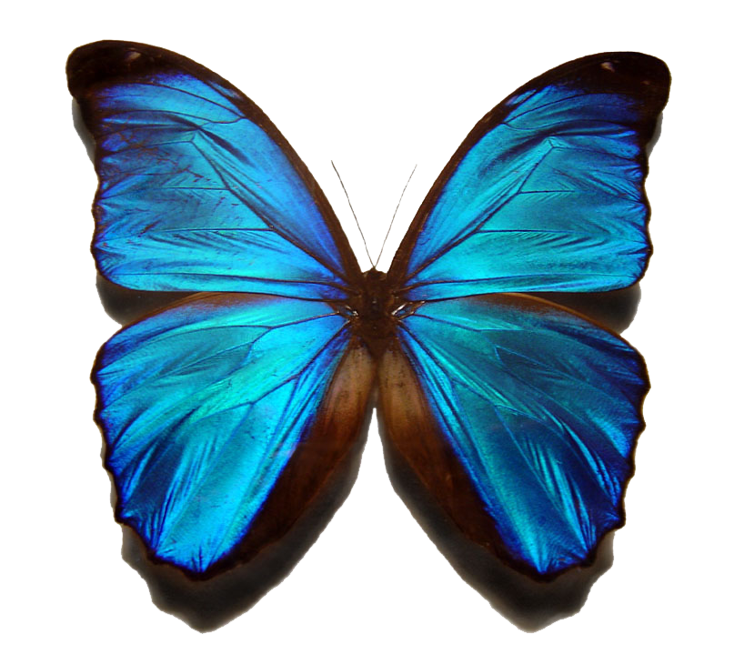

Moje ulubione motyle
Ciekawostki o motylach. Piszczą, udają drapieżniki i mają „panele słoneczne”. 9 zadziwiających cech motyli

Second slide label
Some representative placeholder content for the second slide.
Third slide label
Some representative placeholder content for the third slide.
Gatunki motyli
Quickly design and customize responsive mobile-first sites with Bootstrap, the world’s most popular front-end open source toolkit, featuring Sass variables and mixins, responsive grid system, extensive prebuilt components, and powerful JavaScript plugins.
